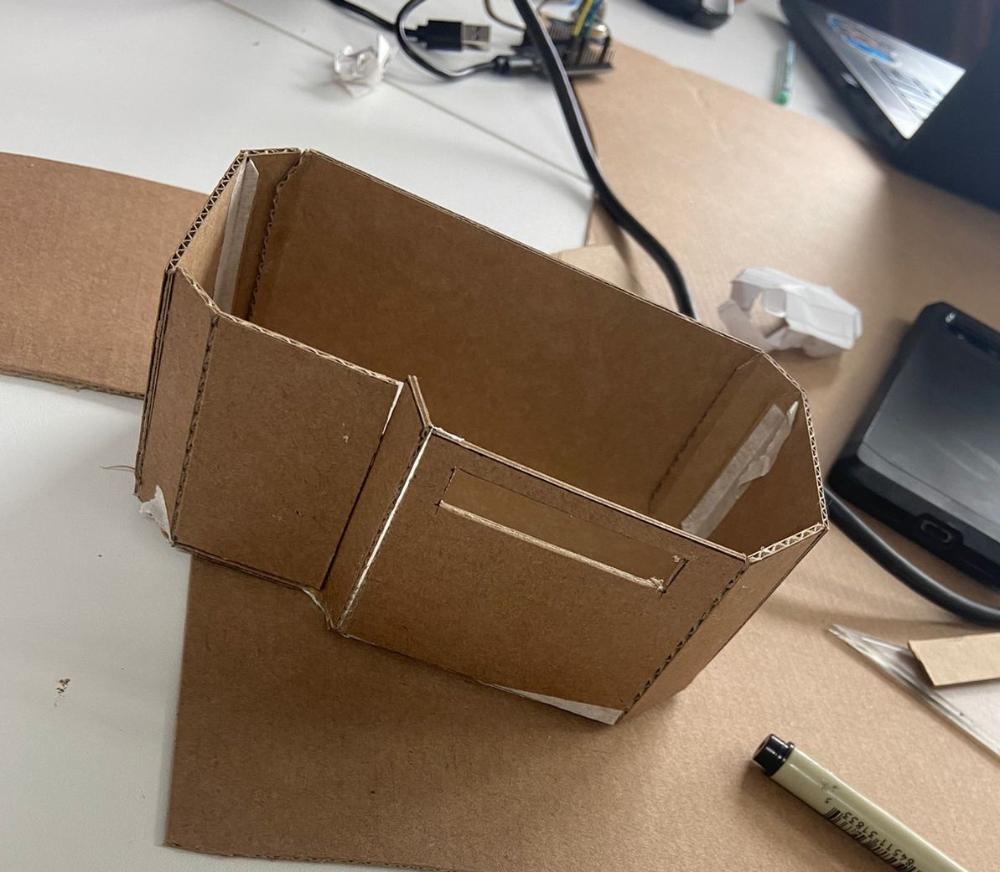
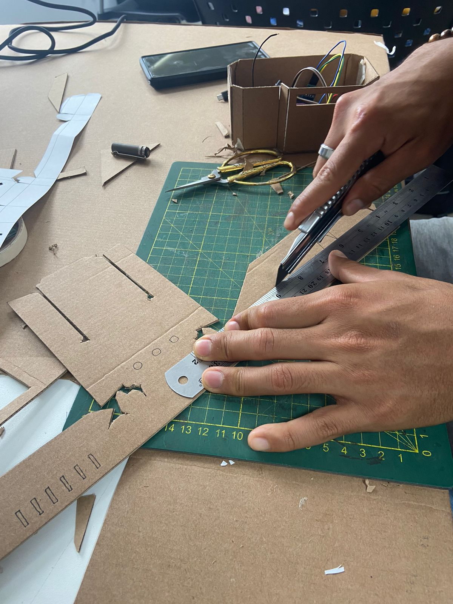
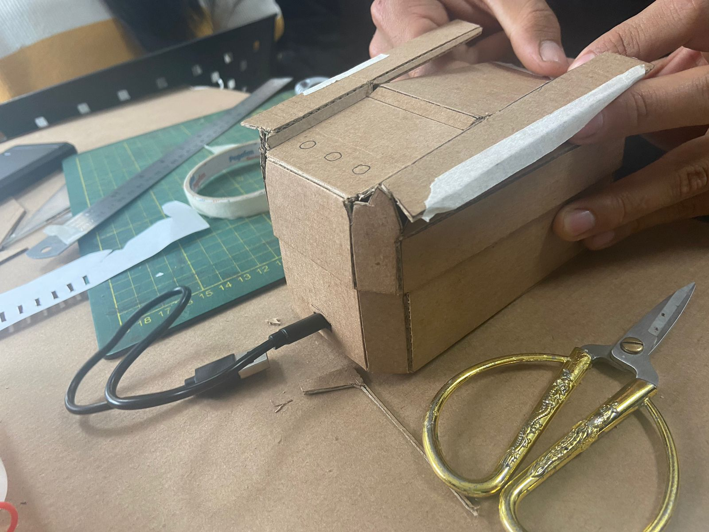
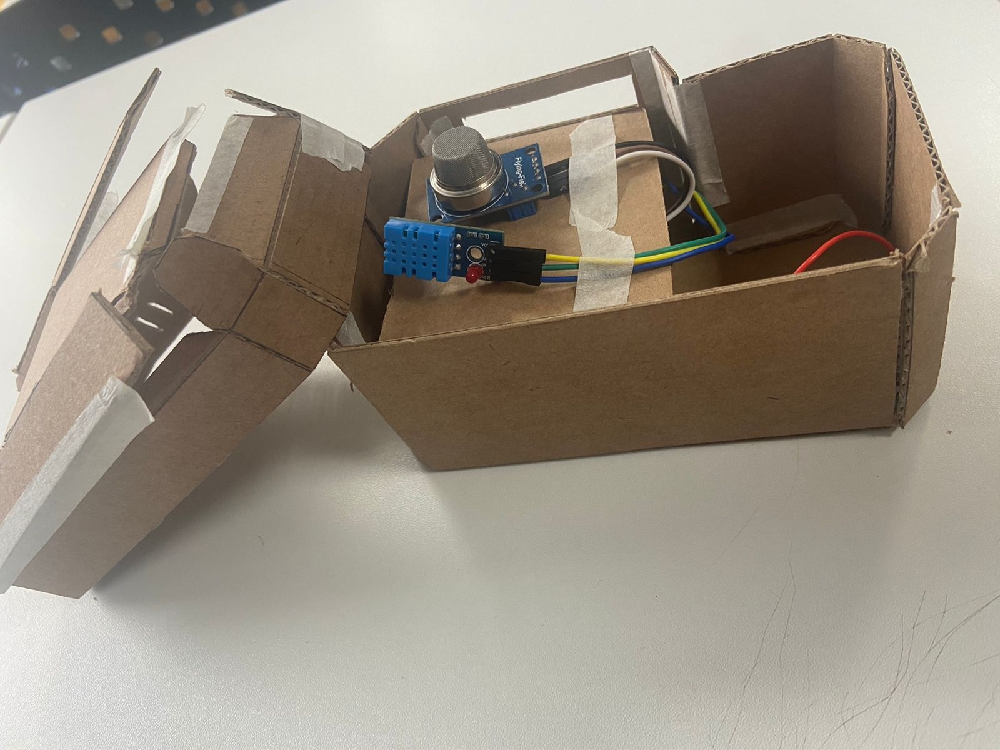

Semana 5: Prototipo en Cartón y Ajuste del Diseño Final
En la quinta semana de nuestro proyecto, nos enfocamos en la creación del prototipo en cartón, un paso esencial para consolidar nuestro diseño. Utilizamos cartón como material base, lo que nos permitió construir un modelo ligero y fácil de manipular, facilitando así el ajuste y la visualización de las diferentes partes del dispositivo.
Durante esta fase, colocamos todas las piezas del dispositivo dentro del prototipo, integrando cada componente para asegurar que todo funcionara de manera cohesiva. Este ejercicio fue fundamental para evaluar cómo se relacionan y funcionan juntos los diferentes elementos del diseño.
 A medida que íbamos ensamblando el prototipo, también realizamos ajustes en el diseño final. Esta iteración nos permitió identificar áreas de mejora y optimizar la disposición de los componentes para maximizar la eficiencia y funcionalidad del dispositivo. Los comentarios y sugerencias del equipo fueron clave en este proceso, lo que enriqueció nuestra colaboración y permitió que cada integrante aportara su perspectiva al diseño.
Con el prototipo en cartón completado y los ajustes realizados, estamos entusiasmados por continuar con los siguientes pasos del proyecto. Este modelo nos ha proporcionado una valiosa oportunidad para visualizar el producto final y experimentar con diferentes configuraciones antes de pasar a la fabricación del prototipo definitivo. Nuestro objetivo es desarrollar un dispositivo que no solo sea innovador, sino que también cumpla su propósito de manera efectiva, contribuyendo a la protección de los ecosistemas y la seguridad de las comunidades afectadas por incendios forestales. Estamos motivados y comprometidos a seguir trabajando juntos para llevar "Niqui" a su culminación.  